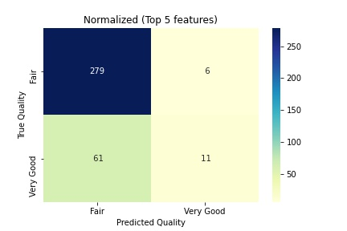
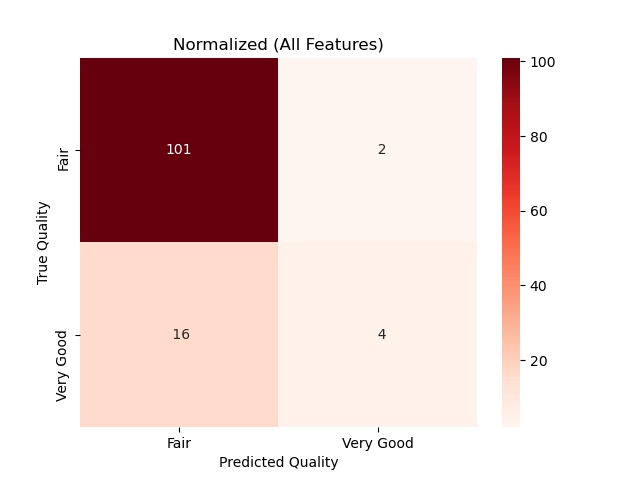
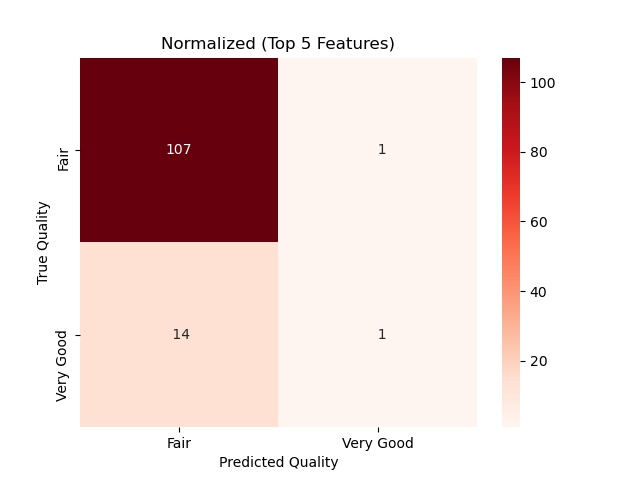

In data exploration and modeling, we utilize all features to predict the quality of wine. We perform deep learning sequential method to receive 83 % accuracy rate.
There are two possible predicted classes: "Fair" and "Very Good". If we were predicting the quality of wine, "very good" would mean to have better quality, and "fair" would mean to lower quality of wine.
The classifier made a total of 357 predictions.
Out of those 357 cases, the classifier predicted "very good" 28 times, and "Fair" 329 times.
In reality, 79 cases in the sample are in category of very good quality, 278 cases are not.
Top Five Features

Summary:
n data exploration and modeling, we perform importanace features methods to selecte top five features predict the quality of wine. We perform deep learning sequential method to receive 82 % accuracy rate.
There are two possible predicted classes: "Fair" and "Very Good". If we were predicting the quality of wine, "very good" would mean to have better quality, and "fair" would mean to lower quality of wine.
The classifier made a total of 357 predictions.
Out of those 357 cases, the classifier predicted "very good" 69 times, and "Fair" 288 times.
In reality, 69 cases in the sample are in category of very good quality, 288 cases are not.
Red Wine
All Features

Features by Score Ranking
alcohol - 0.171243
sulphates - 0.112875
volatile acidity - 0.09814
citric acid - 0.096145
density - 0.085803
total sulfur dioxide - 0.082951
fixed acidity- 0.075679
residual sugar - 0.073609
free sulfur dioxide - 0.069072
pH - 0.067486
chlorides - 0.066996
Findings:
Quality - Fair and Very Good
Methods:
Training size : 0.7
Support Vector Classifier
Summary:
In data exploration and modeling, we utilize all features to predict the quality of wine. We perform deep learning sequential method to receive 93% accuracy rate.
There are two possible predicted classes: "Fair" and "Very Good". If we were predicting the quality of wine, "very good" would mean to have better quality, and "fair" would mean to lower quality of wine.
The classifier made a total of 123 predictions.
Out of those 123 cases, the classifier predicted "very good" 4 times, and "Fair" 119 times.
In reality, 9 cases in the sample are in category of very good quality, 114 cases are not.
Top Five Features

Summary:
In data exploration and modeling, we perform importanace features methods to selecte top five features predict the quality of wine. We perform deep learning sequential method to receive 92 % accuracy rate.
There are two possible predicted classes: "Fair" and "Very Good". If we were predicting the quality of wine, "very good" would mean to have better quality, and "fair" would mean to lower quality of wine.
The classifier made a total of 123 predictions.
Out of those 123 cases, the classifier predicted "very good" 2 times, and "Fair" 121 times.
In reality, 15 cases in the sample are in category of very good quality, 108 cases are not.